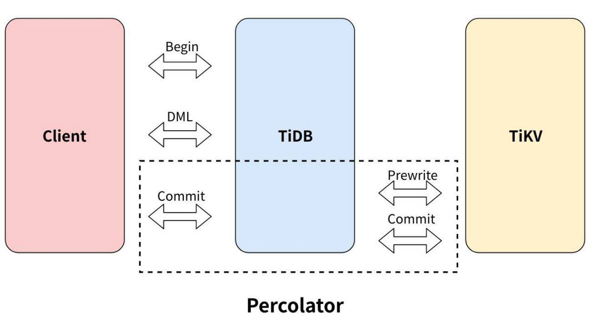
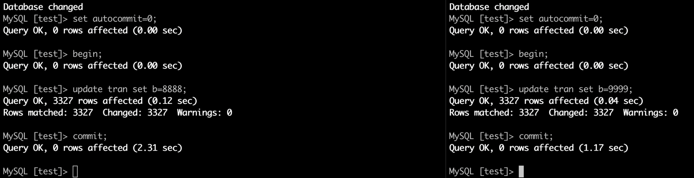
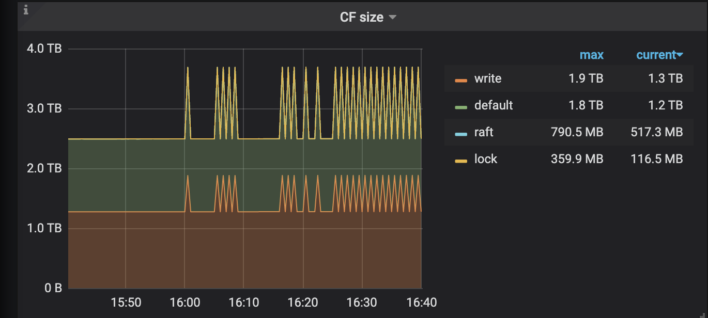
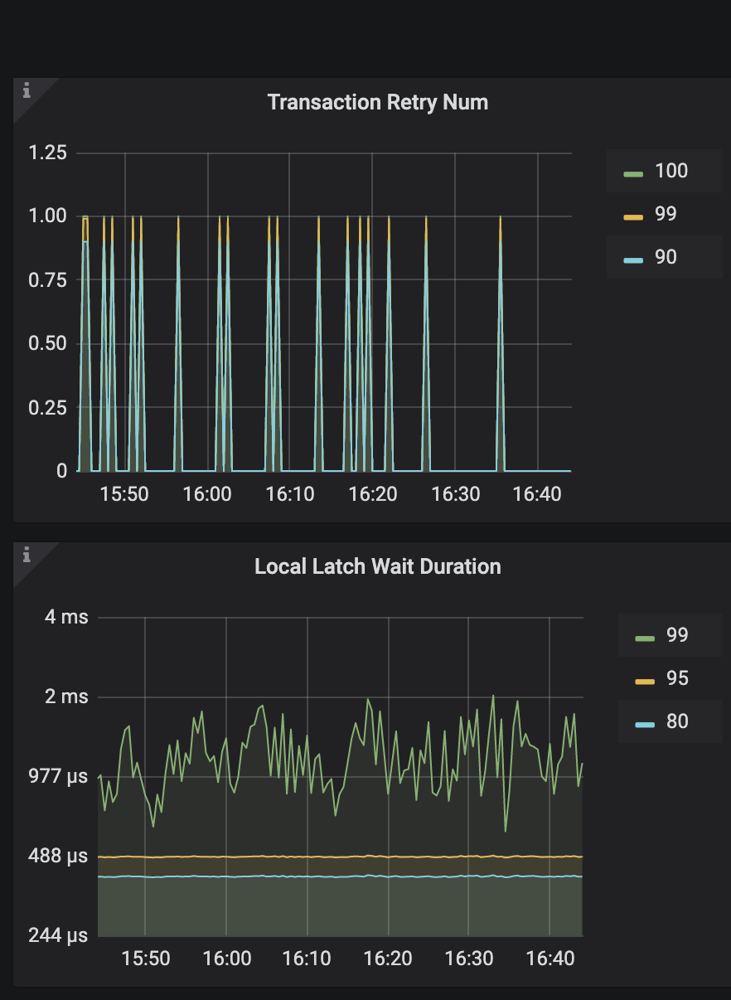

事务是数据库的基础，提供高效的、支持完整 ACID 的分布式事务更是分布式数据库的立足之本。本篇文章会首先介绍事务的基础知识，然后介绍 TiDB 如何基于 Percolator 实现的乐观事务以及在使用上的最佳实践。
TiDB事务模型参考了Percolator论文，由一个两阶段提交构成，Prewrite和Commit。TiDB v3.0.8以前版本（或者由旧版本升级上来），默认使用乐观事务模型。乐观锁或者乐观事务模型是指每次操作数据的时候，认为别人不会修改，所以不必要上锁，在最后提交的时候再进行冲突检测。
事务
事务是数据库执行的最小单元，允许用户将多个读写操作组合为一个逻辑单元。事务需要满足原子性（Atomicity）、一致性（Consistency）、隔离性（Isolation）和持久性（Durability），也就是 ACID。
隔离级别
对用户来说，最友好的并发事务执行顺序为每个事务相当于独占整个数据库，并发事务执行的结果与一个个串行执行相同，也就是串行化，能够避免所有的异常情况，但在这种隔离级别下，并发执行的事务性能较差，提供更弱保证的隔离级别能够显著提升系统的性能。根据允许出现的异常，SQL-92 标准定义了 4 种隔离级别：读未提交 (READ UNCOMMITTED)、读已提交 (READ COMMITTED)、可重复读 (REPEATABLE READ)、串行化 (SERIALIZABLE)。详见下表：
| Isolation Level | Dirty Write | Dirty Read | Fuzzy Read | Phantom |
|---|---|---|---|---|
| READ UNCOMMITTED | Not Possible | Possible | Possible | Possible |
| READ COMMITTED | Not Possible | Not possible | Possible | Possible |
| REPEATABLE READ | Not Possible | Not possible | Not possible | Possible |
| SERIALIZABLE | Not Possible | Not possible | Not possible | Not possible |
并发控制
数据库有多种并发控制方法，这里只介绍以下两种：
- 乐观并发控制（OCC）：在事务提交阶段检测冲突。
- 悲观并发控制（PCC）：在事务执行阶段检测冲突。
乐观并发控制期望事务间数据冲突不多，只在提交阶段检测冲突能够获取更高的性能。悲观并发控制更适合数据冲突较多的场景，能够避免乐观事务在这类场景下事务因冲突而回滚的问题，但相比乐观并发控制，在没有数据冲突的场景下，性能相对要差。
TiDB 乐观事务实现
TiDB 基于 Google Percolator 实现了分布式事务。Percolator 在单行事务的基础上实现了支持跨行、快照隔离级别（Snapshot Isolation ）的分布式事务。
Snapshot Isolation
Percolator 使用多版本并发控制（MVCC）实现了快照隔离级别（Snapshot Isolation），与可重复读的区别在于整个事务是在一个一致的快照上执行。TiDB 使用 PD 作为全局授时服务（TSO）来提供单调递增的版本号：
- 事务开始时获取 start timestamp，也是快照的版本号；事务提交时获取 commit timestamp，同时也是数据的版本号。
- 事务只能读到在事务 start timestamp 之前最新已提交的数据。
- 事务在提交时会根据 timestamp 来检测数据冲突。
Primary Key保证分布式事务原子性
TiDB 对于每个事务，会从涉及到改动的所有 Key 中选中一个作为当前事务的 Primary Key。 在最终提交时，以 Primary 提交是否成功作为整个事务是否执行成功的标识，从而保证了分布式事务的原子性。
两阶段提交（2PC）
Percolator 使用 2PC（Two-phase commit）来保证分布式事务的原子性，分为 Prewrite 和 Commit：
- Prewrite：对事务修改的每个 key 都会检测冲突并写入 lock。每个事务有一个 primary lock 代表了事务的状态。
- Commit：Prewrite 全部成功后，先同步 Commit primary lock，成功后事务提交成功，其他 secondary locks 会异步 Commit。
Percolator 将事务的所有状态都保存在底层支持高可用、强一致性的存储系统中，从而弱化了传统 2PC 中协调者（Coordinator ）的作用，所有的客户端都可以根据存储系统中的事务状态对事务进行提交或回滚。
两阶段提交过程
从当前事务涉及改动的 keys 选中一个作为 primary key（对应上的锁就是primary lock）, 剩余的则为 secondary keys。
第一阶段并行 prewrite 所有 keys。第二阶段提交时，首先 commit primary key ,若此步成功，则说明当前事务提交成功，异步并行 commit secondary keys。
事务的两阶段提交过程如下：

- 客户端开始一个事务。
- TiDB向 pd 获取 tso 作为当前事务的 start_ts。
- 客户端发起读或写请求。
- 客户端发起 commit。
TiDB开始两阶段提交，保证分布式事务的原子性，让数据真正落盘。
i. TiDB 从当前要写入的数据中选择一个 Key 作为当前事务的 Primary Key。
ii. TiDB 并发地向所有涉及的 TiKV 发起 prewrite 请求。TiKV 收到 prewrite 数据后，检查数 据版本信息是否存在冲突或已过期。符合条件的数据会被加锁。
iii. TiDB 收到所有 prewrite 响应且所有 prewrite 都成功。
iv. TiDB 向 PD 获取第二个全局唯一递增版本号，定义为本次事务的 commit_ts。
v. TiDB 向 Primary Key 所在 TiKV 发起第二阶段提交。TiKV 收到 commit 操作后，检查数 据合法性，清理 prewrite 阶段留下的锁。
TiDB 向客户端返回事务提交成功的信息。
- TiDB 异步清理本次事务遗留的锁信息。
乐观事务特点
TiDB乐观事务在提交时才会检测冲突。具体来说发起commit，进入两阶段提交，在Prewrite阶段进行Write Conflict检测。TiDB后续版本提供悲观事务，其特点是在乐观事务基础上，在 Prewrite 之前增加了 AcquirePessimistic Lock 阶段。悲观锁的存在，使读的事务不会被写操作阻塞；保证了 Prewrite 不会发生 Write Conflict，降低了冲突发生的几率，更加适合数据写入冲突激烈的场景。
Prewrite过程写操作会阻塞读，在乐观模式下，所有写操作都积攒在内存，直到最后提交阶段才执行写，这个影响应该非常短暂（但是大事务场景下，由于 prewrite 时间变长，问题会被放大。）；对于写写冲突，只有在客户端执行 COMMIT 时，才会触发两阶段提交并检测是否存在写写冲突。在 TiDB 4.0 版本，对事务模型进行了修改，让读的事务不会被写操作阻塞。
最佳实践
小事务
从上面得知，每个事务提交需要经过 4 轮 RTT（Round trip time）：
- 从 PD 获取 2 次 Timestamp；
- 提交时的 Prewrite 和 Commit。
为了降低网络交互对于小事务的影响，建议将小事务打包来做。如在 auto commit 模式下（即autocommit = 1,可通过set语句修改系统变量autocommit的值），下面每条语句各成为了一个事务：
# original version with auto_commit
UPDATE my_table SET a='new_value' WHERE id = 1;
UPDATE my_table SET a='newer_value' WHERE id = 2;
UPDATE my_table SET a='newest_value' WHERE id = 3;
以上每一条语句，都需要经过两阶段提交，网络交互就直接 *3， 如果能够把以上语句打包成一个事务提交（可以选择使用显式事务，即在一个事务内执行三条语句），性能上会有一个显著的提升，优化后的版本如下：
# improved version
START TRANSACTION;
UPDATE my_table SET a='new_value' WHERE id = 1;
UPDATE my_table SET a='newer_value' WHERE id = 2;
UPDATE my_table SET a='newest_value' WHERE id = 3;
COMMIT;
同理，对于 insert 语句也建议打包成事务来处理。
大事务
既然小事务有问题，那事务是不是越大越好呢？
由于 TiDB 两阶段提交的要求，修改数据的单个事务过大时会存在以下问题：
- 客户端在提交之前，数据都写在内存中，而数据量过多时易导致 OOM (Out of Memory) 错误。
- 在第一阶段写入数据耗时增加，与其他事务出现读写冲突的概率会指数级增长，容易导致事务提交失败。
- 最终导致事务完成提交的耗时增加。
为了解决这个问题，TiDB对事务的大小做了一些限制：谷歌Spanner事务限制
- 单个事务包含的 SQL 语句不超过 5000 条（默认）
- 每个键值对不超过 6MB
- 键值对的总数不超过 300,000
- 键值对的总大小不超过 100MB
因此，对于 TiDB 乐观事务而言，事务太大或者太小，都会出现性能上的问题。TiDB建议每 100～500 行写入一个事务，可以达到一个比较优的性能。由于底层存储引擎的限制，TiDB 要求单个键值对不超过 6 MB，同时也设置了单个事务的键值对的总大小不超过 100 MB，这个默认值可以通过 TiDB 配置文件中的配置项 txn-total-size-limit 进行修改，最大支持到 10GB。
如果实在要大事务提交，然后不想业务侧做切割事务，可以使用Tidb分批提交:但无法保证事务ACID特性，而且只对 insert 和delete 有效果。
set autocommit= 0;
set tidb_batch_insert=1;
set tidb_batch_delete=1;
insert into tableA select * from tableB;
事务冲突
冲突检测
乐观事务下，检测底层数据是否存在写写冲突是一个很重的操作。具体而言，TiKV 在 prewrite 阶段就需要读取数据进行检测。为了优化这一块性能，TiDB 集群会在内存里面进行一次冲突预检测。
作为一个分布式系统，TiDB在内存中的冲突检测主要在两个模块进行：
- TiDB 层，如果在 TiDB 实例本身发现存在写写冲突，那么第一个写入发出去后，后面的写入就已经能清楚地知道自己冲突了，没必要再往下层 TiKV 发送请求去检测冲突。
- TiKV 层，主要发生在 prewrite 阶段。因为 TiDB 集群是一个分布式系统，TiDB 实例本身无状态，实例之间无法感知到彼此的存在，也就无法确认自己的写入与别的 TiDB 实例是否存在冲突，所以会在 TiKV 这一层检测具体的数据是否有冲突。
其中 TiDB 层的冲突检测可以关闭，配置项可以启用：
txn-local-latches：事务内存锁相关配置，当本地事务冲突比较多时建议开启。可以在默认值配置文件中对默认值进行修改。
- enable
- 开启
- 默认值：false
- capacity
- Hash 对应的 slot 数，会自动向上调整为 2 的指数倍。每个 slot 占 32 Bytes 内存。当写入数据的范围比较广时（如导数据），设置过小会导致变慢，性能下降。
- 默认值：1024000
配置项 capacity 主要影响到冲突判断的正确性。在实现冲突检测时，不可能把所有的 Key 都存到内存里，所以真正存下来的是每个 Key 的 Hash 值。有 Hash 算法就有碰撞也就是误判的概率，这里可以通过配置 capacity 来控制 Hash 取模的值：
- capacity 值越小，占用内存小，误判概率越大。
- capacity 值越大，占用内存大，误判概率越小。
在实际应用时，如果业务场景能够预判断写入不存在冲突（如导入数据操作），建议关闭冲突检测。
相应地，TiKV 内存中的冲突检测也有一套类似的东西。不同的是，TiKV 的检测会更严格，不允许关闭，只提供了一个 hash 取模值的配置项，可以在默认值配置文件中对默认值进行修改：
- scheduler-concurrency
- scheduler 内置一个内存锁机制，防止同时对一个 Key 进行操作。每个 Key hash 到不同的槽。
- 默认值：2048000
此外，TiKV 提供了监控查看具体消耗在 latch 等待的时间：

当 Scheduler latch wait duration 的值特别高时，说明大量时间消耗在等待锁的请求上。如果不存在底层写入慢的问题，基本上可以判断该段时间内冲突比较多。
事务的重试
使用乐观事务模型时，在高冲突率的场景中，事务很容易提交失败。比如 2 个事务同时修改相同行，提交时会有一个事务报错：
ERROR 8005 (HY000) : Write Conflict, txnStartTS is stale
而 MySQL 内部使用的是悲观事务模型，在执行 SQL 语句的过程中进行冲突检测，所以提交时很难出现异常。为了兼容 MySQL 的悲观事务行为，降低用户开发和迁移的成本，TiDB 提供了重试机制。
重试机制
当事务提交后，如果发现冲突，TiDB 内部重新执行包含写操作的 SQL 语句。可以通过设置tidb_disable_txn_auto_retry = off 开启自动重试，并通过 tidb_retry_limit 设置重试次数：
- tidb_disable_txn_auto_retry：这个参数控制是否自动重试，默认为 1，即不重试。
- tidb_retry_limit：用来控制重试次数，注意只有第一个参数启用时该参数才会生效。
如何设置以上参数呢？可以通过set语句对系统变量进行设置，推荐两种方式设置：
- session 级别设置：
set @@tidb_disable_txn_auto_retry = 0; set @@tidb_retry_limit = 10; - 全局设置：
注意：set @@global.tidb_disable_txn_auto_retry = 0; set @@global.tidb_retry_limit = 10;
tidb_retry_limit 变量决定了事务重试的最大次数。当它被设置为 0 时，所有事务都不会自动重试，包括自动提交的单语句隐式事务。这是彻底禁用 TiDB 中自动重试机制的方法。禁用自动重试后，所有冲突的事务都会以最快的方式上报失败信息 (try again later) 给应用层。
重试的局限性
TiDB 默认不进行事务重试，因为重试事务可能会导致更新丢失，从而破坏可重复读的隔离级别。
事务重试的局限性与其原理有关。事务重试可概括为以下三个步骤：
- 重新获取 start_ts。
- 重新执行包含写操作的 SQL 语句。
- 再次进行两阶段提交。
第二步中，重试时仅重新执行包含写操作的 SQL 语句，并不涉及读操作的 SQL 语句。但是当前事务中读到数据的时间与事务真正开始的时间发生了变化，写入的版本变成了重试时获取的 start_ts 而非事务一开始时获取的 start_ts。
因此，当事务中存在依赖查询结果来更新的语句时，重试将无法保证事务原本可重复读的隔离级别，最终可能导致结果与预期出现不一致。在这种场景下可以使用 select for update 来保证事务提交成功时原先查询的结果没有被修改，但包含 select for update 的事务无法自动重试。
如果业务可以容忍事务重试导致的异常，或并不关注事务是否以可重复读的隔离级别来执行，则可以开启自动重试。但更建议的是在冲突严重的场景下，使用 TiDB 的悲观事务。
垃圾回收（GC）
TiDB 的事务的实现采用了 MVCC（多版本并发控制）机制，当新写入的数据覆盖旧的数据时，旧的数据不会被替换掉，而是与新写入的数据同时保留，并以时间戳来区分版本。数据版本过多会占用大量空间，同时影响数据库的查询性能，GC 的任务便是清理不再需要的旧数据。
GC 会被定期触发，默认情况下每 10 分钟一次。每次 GC 时，首先，TiDB 会计算一个称为 safe point 的时间戳（默认为当前时间减去 10 分钟），接下来 TiDB 会在保证 safe point 之后的快照全部拥有正确数据的前提下，删除更早的过期数据。
TiDB 的 GC 相关的配置存储于 mysql.tidb 系统表中，可以通过 SQL 语句对这些参数进行查询和更改：
select VARIABLE_NAME, VARIABLE_VALUE from mysql.tidb;
例如，如果需要将 GC 调整为保留最近一天以内的数据，只需执行下列语句即可：
update mysql.tidb set VARIABLE_VALUE="24h" where VARIABLE_NAME="tikv_gc_life_time";
GC 在执行过程中会删除大量数据，可能会对线上业务造成影响。可通过修改 TiKV 配置中的 gc.max-write-bytes-per-sec 限制 GC worker 每秒数据写入量，降低对正常请求的影响，0 为关闭该功能。
乐观锁初体验
TiDB的乐观锁
- 测试数据准备
测试SQLMySQL [test]> insert into tran select id,star from eyesight.t_request; Query OK, 3327 rows affected (0.17 sec) Records: 3327 Duplicates: 0 Warnings: 0 MySQL [test]>
左边事务先进行begin
两个窗口同时按下commit

分析
- 客户端并没有报错
- 要么就是串行执行没有冲突，要么就是冲突了内部Tidb进行重试
验证
- 通过查看tidb.log日志
- startTs(415144181973647361)和startTs(415144181960540213)事务冲突
- 进行重试的是415144181973647361(图片终端左边的事务)
[2020/03/08 14:36:17.121 +08:00] [WARN] [session.go:419] [sql] [label=internal] [error="[kv:9007]Write conflict, txnStartTS=415144181973647361, conflictStartTS=415144181960540213, conflictCommitTS=415144182052290562, key={tableID=19, indexID=1, indexValues={415144166153256976, 114421, }} primary={tableID=19, indexID=1, indexValues={415144166153256976, 114421, }} [try again later]"] [txn="Txn{state=invalid}"] [2020/03/08 14:36:17.121 +08:00] [WARN] [session.go:611] [retrying] [schemaVersion=1813] [retryCnt=0] [queryNum=1] [sql="update mysql.stats_meta set version = 415144181973647361, count = count + 52587, modify_count = modify_count + 52587 where table_id = 1807"] [2020/03/08 14:36:17.125 +08:00] [WARN] [session.go:632] ["transaction association"] ["retrying txnStartTS"=415144182301327413] ["original txnStartTS"=415144181973647361] 重新获取startTs进行事务重新提交 [2020/03/08 14:36:17.279 +08:00] [INFO] [2pc.go:1039] ["2PC clean up done"] [txnStartTS=415144181973647361]结果验证
- 从图片的两个事务的commit时间(2.31和1.17)，就能猜测到时右边事务2提交在前，左边事务1提交在后
- 通过select数据也是验证了如上猜测。
MySQL [test]> select * from tran limit 2; +--------+------+ | a | b | +--------+------+ | 100007 | 8888 | | 100036 | 8888 | +--------+------+ 2 rows in set (0.00 sec) MySQL [test]>如何判断集群的事务健康
tikv监控--server板块
lock的大小应该是比较小。

tidb监控-transaction板块
